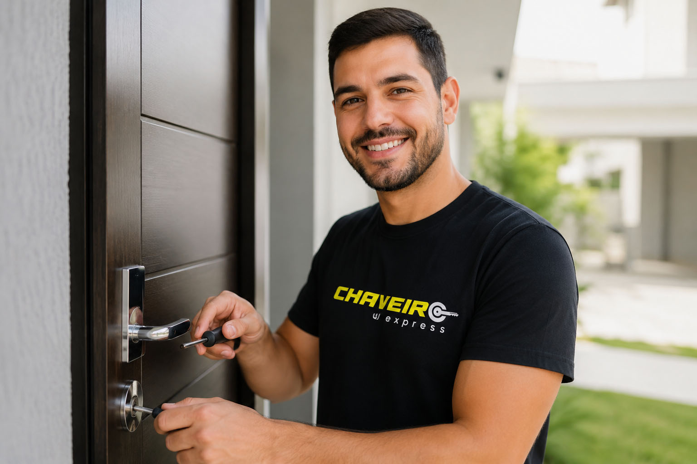
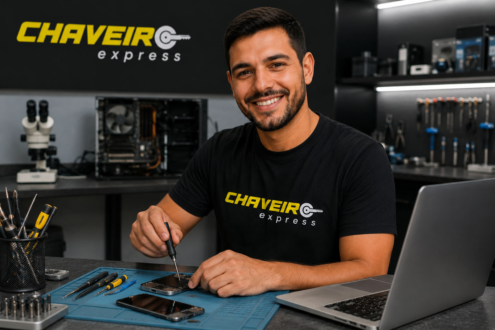

Chaveiro residencial
Abertura de residências, comércios e fechaduras com técnicas adequadas para cada situação.
Emergências com portas, veículos, chaves e fechaduras? Fale diretamente com a equipe e receba atendimento ágil no Xaxim e bairros próximos.
Envie sua localização e explique o que aconteceu. Retornaremos com as orientações para o atendimento.
Falar com o chaveiro
Abertura de residências, comércios e fechaduras com técnicas adequadas para cada situação.
Abertura de veículos, cópias, chaves codificadas, telecomandos e soluções automotivas.

Diagnóstico, manutenção e suporte técnico para celulares, notebooks e computadores.
Chame pelo WhatsApp ou ligue diretamente.
Informe o bairro e descreva o serviço necessário.
A equipe orienta e combina o deslocamento.
Atendimento prioritário, sujeito à disponibilidade e à localização informada no contato.
Consultar atendimento no meu bairroNão encontrou sua dúvida? Chame pelo WhatsApp e explique sua situação.
Tirar uma dúvidaAtendemos de segunda a sexta-feira, das 08h00 às 20h00, e aos sábados, das 09h00 às 14h00. Entre em contato pelo WhatsApp para verificar disponibilidade e agendar seu atendimento.
Sim. Também realizamos outros serviços automotivos, como cópias, chaves codificadas e telecomandos, conforme o modelo.
Envie uma mensagem com o tipo de serviço, fotos quando possível e sua localização. A equipe retornará com as orientações.
Fale agora com a Chaveiro Express CWB.